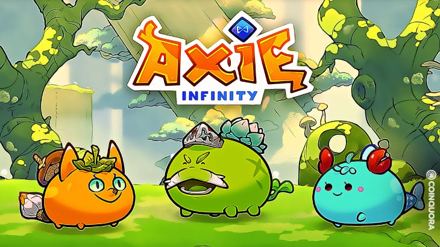

I. Play to Earn : Jouer pour gagner
Il existe des jeux vidéos que l'on nomme « Play to Earn », qui payent les joueurs en tokens pour le simple fait de jouer.
🎮 Comment ça marche ?
Prenons un exemple : vous jouez à un jeu, ce jeu vous fait gagner des pièces numériques lorsque vous finissez un niveau ou une mission donnée. Ces dites pièces n'ont aucune réelle valeur si ce n'est dans le jeu.
Et bien le Play to Earn c'est exactement le même fonctionnement, sauf que les pièces numériques gagnées sont de la cryptomonnaie, donc une monnaie qui a un réel cours d'échange et donc une réelle valeur.
En Thaïlande, où le salaire moyen est de 600€, énormément de personnes ont pu se faire une petite fortune grâce à ce jeu. Le jeu leur offrait une opportunité professionnelle totalement démesurée.

II. Move to Earn : Bouger pour gagner
Une autre catégorie d'earning : les « Move to Earn ». Ces projets ont pour principe de rémunérer les personnes faisant du sport au quotidien.
👟 Exemple : Step'n
Step'n est une application pionnière dans le domaine, qui propose d'acheter des chaussures numériques, qui sont des NFTs.
- Ces chaussures vous donnent accès à des barres d'énergie sur votre application.
- Lorsque vous marchez ou courez, ces barres se consomment en vous faisant gagner du GST, qui est la cryptomonnaie affiliée au projet Step'n.
- L'investissement de base se fait lors de l'achat de vos chaussures.
- Au bout d'un certain temps d'utilisation, vous atteignez votre retour sur investissement (ROI) correspondant à votre investissement de départ.
ROI = (Gains quotidiens × Nombre de jours) - Investissement initialUne fois l'investissement initial récupéré, chaque token gagné devient du profit net.
III. Watch to Earn : Regarder pour gagner
La dernière catégorie bien connue : les « Watch to Earn ». Ce sont des applications décentralisées qui permettent de gagner des tokens en regardant des pubs, des vidéos ou des streams.
📺 Exemple 1 : Odysee
Odysee est une plateforme concurrente de YouTube, qui permet d'être rémunéré quand on regarde des vidéos. Les viewers gagnent des tokens simplement en consommant du contenu.
🎥 Exemple 2 : Theta Network
Theta Network est un projet de streaming décentralisé concurrent de Twitch ou de YouTube Live, qui permet de rémunérer aussi bien les streamers que les viewers qui regardent les streams.
IV. Perspectives et adoption
L'earning étant une toute nouvelle méthode d'utilisation des cryptomonnaies, les projets sont encore jeunes et donc assez fragiles mais surtout, sont enclins à la volatilité des marchés puisqu'ils sont soumis au cours de la cryptomonnaie.
• Durabilité du modèle économique du projet
• Risque de perte de l'investissement initial (NFTs, chaussures, personnages)
• Évolution rapide du secteur : un projet populaire aujourd'hui peut être obsolète demain
🚀 Un secteur en pleine expansion
Puisque cette utilisation est encore jeune, on peut facilement en déduire que beaucoup de nouvelles méthodes d'earning verront le jour prochainement et ne seront plus seulement des Play to Earn ou des Move to Earn.
Peut-être qu'un jour un projet sortira avec comme principe de vous rémunérer lorsque vous dormez, ou même lorsque vous vous lavez les dents, sait-on jamais.
🌟 Pourquoi l'earning est stratégique pour l'adoption crypto
- Porte d'entrée pour les novices : L'earning permet d'initier les débutants à l'univers des crypto-actifs de façon concrète et ludique, sans nécessiter de connaissances techniques préalables.
- Utilité tangible : Ces projets sont concrets et assez simples à appréhender, comparés à la plupart des autres projets, pour quelqu'un n'ayant aucune connaissance en cryptomonnaies.
- Effet réseau : Ce qui rapporte de l'argent rapporte de facto beaucoup d'intérêts et donc potentiellement beaucoup de nouveaux utilisateurs.